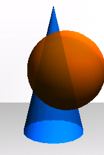
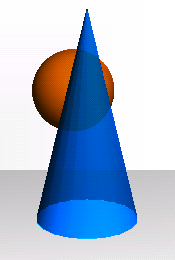

Hom pot experimentar amb altres idees. Per exemple, si fem servir el propi color de l'objecte transparent per filtrar el color de fons, podem obtenir imatges com aquestes (en les que s'ha fet servir glBlendFunc(GL_SRC_ALPHA, GL_SRC_COLOR); i s'han ordenat les primitives de darrera endavant):
|  |  |
Compareu-les amb les de la Figura 1 d'aquesta pàgina